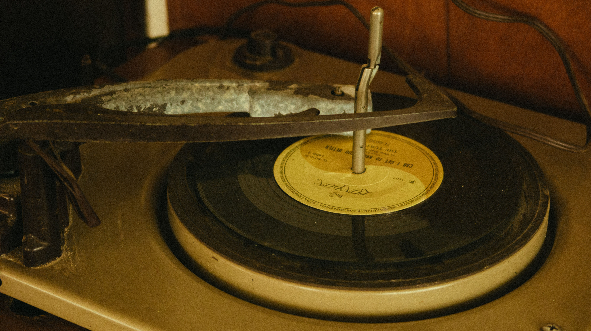

💻 Programación
Programar es darle vida a las ideas a través de instrucciones en una computadora para que resuelva problemas o las haga, para entretener o hasta para dar frustración. Me interesa porque me permite crear lo que tengo en mente, aunque sea muy difícil.

Aprende más en MDN Web Docs
🎮 Videojuegos
Los videojuegos mezclan un poco de todo: arte, música, programación y una buena historia. Me gustan porque han sido la mayor parte de mi vida, mi mejor entretenimiento y también mis enojos, además de que detrás de cada juego hay un trabajo de años.
Visita Steam
🎵 Plataformas de música
Las plataformas de streaming como Spotify y Apple Music permiten escuchar millones de canciones y ya no depender de tener un álbum en formato físico o esperar a que algún conocido tenga una copia de un músico poco conocido que te interese. Actualmente uso Spotify por temas económicos, pero me gustaría usar Apple Music.

Spotify |
Apple Music